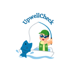
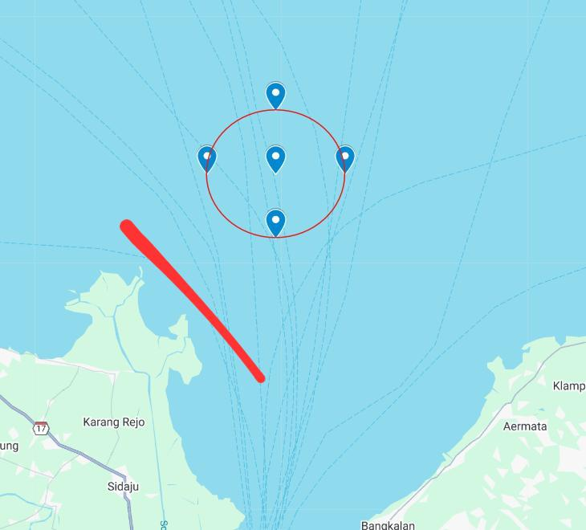

Prediksi Tingkat Upwelling
klasifikasi zona upwelling berdasarkan suhu dan arah angin
Peta Zona Penelitian Upwelling

Simbol di Peta:
🔵 Titik biru: Lokasi pengambilan data
🔴 Lingkaran: Area observasi
📍 Garis merah: Searah dengan garis pantai
Cek Data Real Time
Kunjungi Situs BMKG
Masuk ke Input Data
Input Data Upwelling
🧪 Data Observasi Laut
Suhu Permukaan Laut (°C):
Kecepatan Angin (m/s):
Arah Angin:
Searah Garis Pantai
Tidak Searah Garis Pantai
🔍 Cek Kondisi Upwelling
♻️ Reset
🏠 Halaman Awal
×
Hasil Prediksi
...